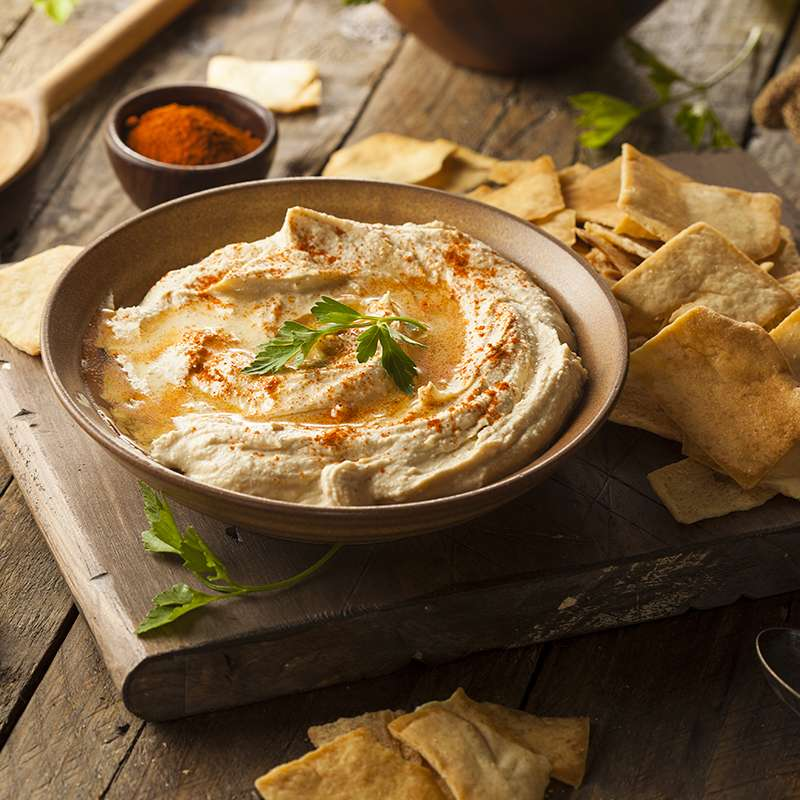

Hummus
Atrás

Ingredientes
- Garbanzos cocidos
- 2 cucharadas de tahini
- Jugo de limón o vinagre
- 1 diente de ajo
- Aceite de oliva
- Sal
- Pimienta
- Comino
- Paprika, chipotle o chile de árbol
Pasos
- Coloca los garbanzos cocidos en un procesador de alimentos.
- Agrega el tahini, jugo de limón o vinagre, ajo, aceite de oliva, sal, pimienta y comino.
- Agrega agua fría hasta obtener la consistencia deseada.
- Procesa hasta obtener una mezcla suave y cremosa.
- Ajusta la sazón al gusto.